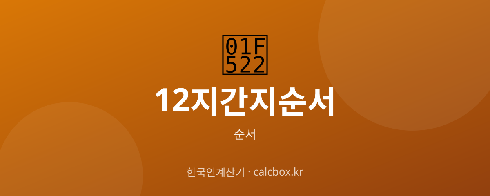

12지 간지 순서 — 십이지 시간·방위까지 한눈에 정리
옛사람들이 시계와 나침반처럼 쓰던 12지(십이지). 자·축·인·묘 순서가 하루의 시간과 방위에 어떻게 대응하는지 정리했습니다.

12지 간지 순서 한눈에
십이지는 동물(띠)의 상징일 뿐 아니라, 옛날에는 하루의 시간과 방위를 나타내는 기준으로도 쓰였습니다. 하루를 12등분해 각 지지에 2시간씩 배정하고, 360도 방위도 12지로 나눴습니다.
여기서는 시간·방위 관점에서 십이지 순서를 정리합니다.
12지 간지 순서 정리
십이지의 시간대와 방위 대응입니다.(시작은 자시, 밤 11시)
| 순서 · 지지 | 시간대 | 방위 |
|---|---|---|
| 1 · 자(子) | 23:00 ~ 01:00 | 정북 |
| 2 · 축(丑) | 01:00 ~ 03:00 | 북북동 |
| 3 · 인(寅) | 03:00 ~ 05:00 | 동북동 |
| 4 · 묘(卯) | 05:00 ~ 07:00 | 정동 |
| 5 · 진(辰) | 07:00 ~ 09:00 | 동남동 |
| 6 · 사(巳) | 09:00 ~ 11:00 | 남남동 |
| 7 · 오(午) | 11:00 ~ 13:00 | 정남 |
| 8 · 미(未) | 13:00 ~ 15:00 | 남남서 |
| 9 · 신(申) | 15:00 ~ 17:00 | 서남서 |
| 10 · 유(酉) | 17:00 ~ 19:00 | 정서 |
| 11 · 술(戌) | 19:00 ~ 21:00 | 서북서 |
| 12 · 해(亥) | 21:00 ~ 23:00 | 북북서 |
쉽게 외우는 법
네 방위만 기억하면 쉽습니다: 자=정북, 묘=정동, 오=정남, 유=정서. 이 네 지지가 동서남북의 기준점이 됩니다.
정오(正午)의 '오'가 바로 십이지의 '오(午)시=낮 11~13시'에서 왔고, 자정(子正)의 '자'는 '자(子)시=밤 11~1시'에서 왔습니다.
참고사항
각 지지는 2시간 폭을 가지며, '정각'은 그 시간대의 한가운데를 가리킵니다. 예를 들어 자시는 23~01시지만 '자정(子正)'은 그 중앙인 밤 12시(00시)입니다. 방위는 자(북)를 기준으로 시계 방향으로 30도씩 돌아갑니다.
자주 묻는 질문 (FAQ)
Q. 자시는 몇 시부터 몇 시까지인가요?
자시(子時)는 밤 11시부터 다음 날 새벽 1시까지입니다. 그 한가운데인 밤 12시가 '자정(子正)'입니다. 십이지는 각각 2시간씩을 담당합니다.
Q. 십이지로 방위는 어떻게 나타내나요?
자(子)를 정북으로 두고 시계 방향으로 30도씩 배정합니다. 묘(卯)는 정동, 오(午)는 정남, 유(酉)는 정서가 됩니다.
Q. '정오'와 '자정'이 십이지와 관련 있나요?
네. 낮 12시를 뜻하는 '정오(正午)'는 오(午)시의 한가운데, 밤 12시를 뜻하는 '자정(子正)'은 자(子)시의 한가운데에서 나온 말입니다.